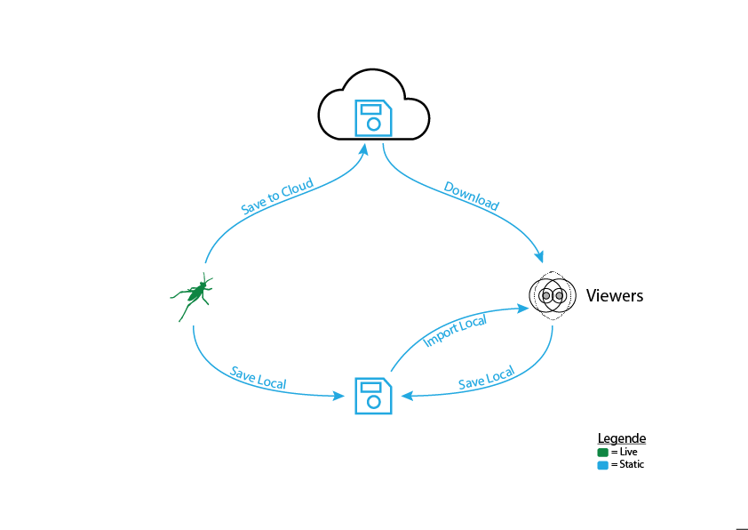

6. Tutorial: Project documentation¶
Radii projects can be documented in a number of ways. This tutorial will show you how to document a presentation by saving or recording it. Saving geometry and controls separately has proven a useful practice, they can be loaded into the viewer speratily later. Making the individual files smaller and quicker to save.
6.1. Save a .radii file¶
Radii file diagram
From Rhino Grasshopper:
with the Save Content component - save everything that is connected as a radii file to be used locally - save everything to the cloud
Viewer:
Everything that was received by the Viewer during a session can be saved locally through the Remote Content Menu, save menu. It can then be opened through the import option in the same menu. With this method you could for example save a presentation at its end to explore it further at a later time.
6.2. Screen record video¶
This method might need a stronger or separat pc to work smoothly. An open source screenrecoder that we found useful and relatively easy to use is OBS. It can be found under https://obsproject.com/